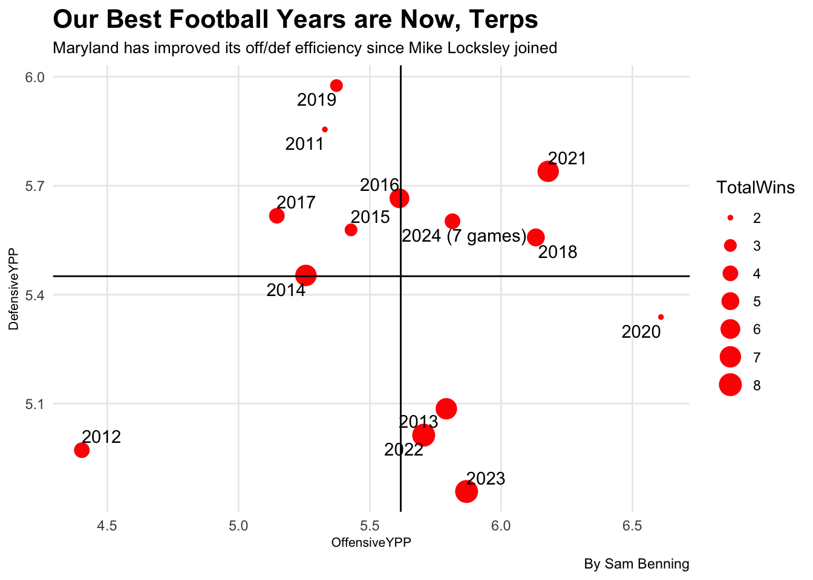

Not Elite, But Not Too Bad - Comparing UMD CFB Recent Seasons
football
Maryland
Author
Sam Benning
Published
October 23, 2024
While we as Terps fans may be generally displeased with our play comparative to the other Big Ten starring teams, we are actually in a much better place than we were through the 2010’s. The stats will back this up.
In this blog post, we are going to look through college football game logs to gain information on how Maryland football’s performance has measured each season since 2011. We will mainly be using bubble charts to look at this data and compare seasons. The bubble chart is similar to a scatterplot, as it contains points on an x,y graph, but it includes a z variable which is related to the other variables. The z variable is represented through the size of the point on the graph (aka the bubble).
Let’s first load in our college football data.
Code
library(tidyverse)
── Attaching core tidyverse packages ──────────────────────── tidyverse 2.0.0 ──
✔ dplyr 1.1.4 ✔ readr 2.1.5
✔ forcats 1.0.0 ✔ stringr 1.5.1
✔ ggplot2 3.5.1 ✔ tibble 3.2.1
✔ lubridate 1.9.3 ✔ tidyr 1.3.1
✔ purrr 1.0.2
── Conflicts ────────────────────────────────────────── tidyverse_conflicts() ──
✖ dplyr::filter() masks stats::filter()
✖ dplyr::lag() masks stats::lag()
ℹ Use the conflicted package (<http://conflicted.r-lib.org/>) to force all conflicts to become errors
We will be measuring Maryland’s performance based upon their yards per play (YPP) both offensively and defensively. We can extract this data from our current dataset.
Next, let’s make our bubble chart using ggplot. x is Offensive YPP, y is DefensiveYPP, and z is wins, by season.
Code
#Formatting so we can show that 2024 isn't done yet in the labelsypp <- ypp |>mutate(season2use =ifelse(Season =="2024", "2024 (7 games)", Season))
Code
ggplot() +geom_point(data=ypp, aes(x=OffensiveYPP, y=DefensiveYPP, size=TotalWins), color="red") +#plot the means as lines to make a gridgeom_vline(xintercept =5.617601) +geom_hline(yintercept =5.45072) +geom_text_repel(data=ypp, aes(x=OffensiveYPP, y=DefensiveYPP, label=season2use)) +labs(title="Our Best Football Years are Now, Terps", subtitle="Maryland has improved its off/def efficiency since Mike Locksley joined", caption="By Sam Benning") +theme_minimal() +theme(plot.title =element_text(size =16, face ="bold"),axis.title =element_text(size =8), plot.subtitle =element_text(size=10), panel.grid.minor =element_blank() )

The best place to be in this plot is the bottom right, meaning the offense was producing higher-yardage plays and the defense held opponents to low yardages. Additionally, the bigger the bubble, the better.
Those were some tough years as we left the ACC and entered the Big Ten. 2013 stands as a bit of an outlier in those years, which is when we had some NFL stars on our roster, including Stefon Diggs and Yannick Ngakoue. Sure, Maryland isn’t amongst the top teams in the country now, but every once in a while we can beat someone and storm the field. This is shown through the bubble chart - we are trending in the right direction, especially in the realm of defense. Specifically since 2019 when Coach Mike Locksley began his HC position, we see improvement. Three of four years in the bottom right quadrant of success have been in the Locksley era. But, those bubbles aren’t immensely bigger in the recent years compared to the past. The Terps have yet to break more than 8 wins since before 2011. If we want to be elite, we need to shift our quadrant by having more years in the bottom right. It just depends on what we’re satisfied with.